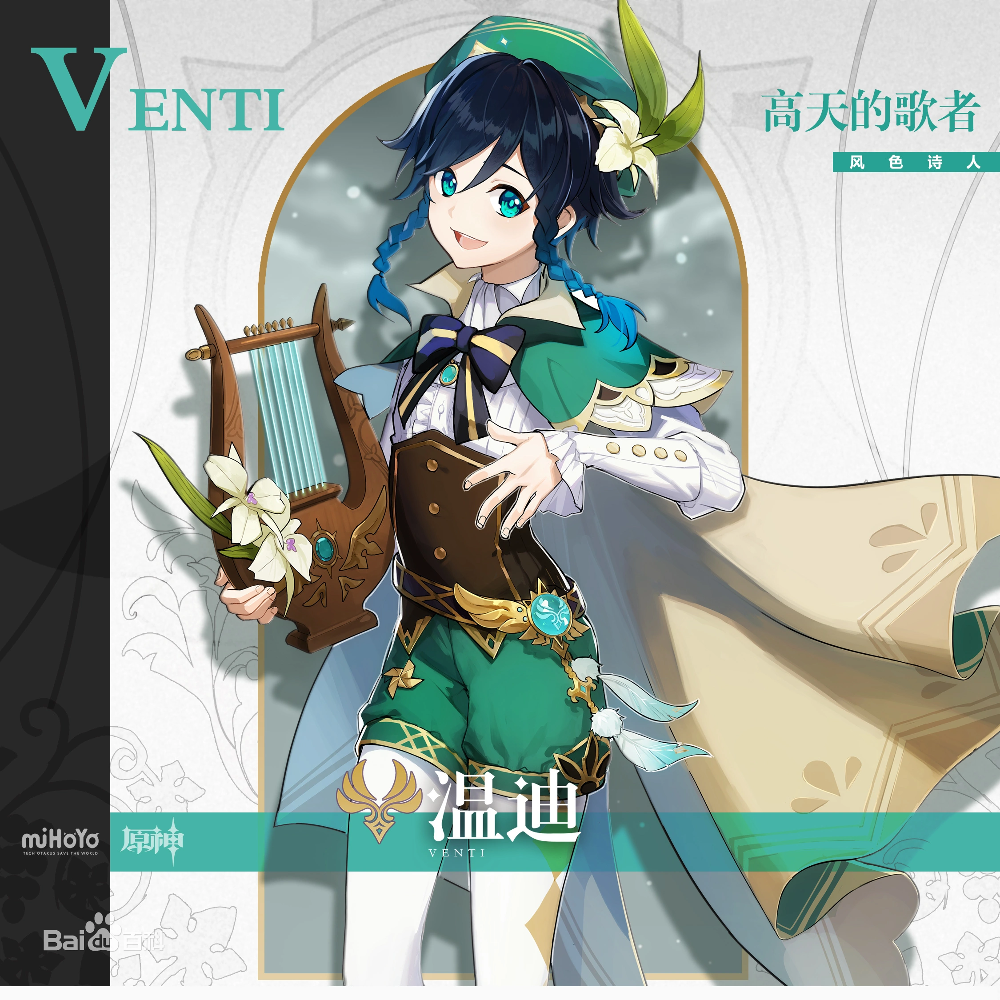
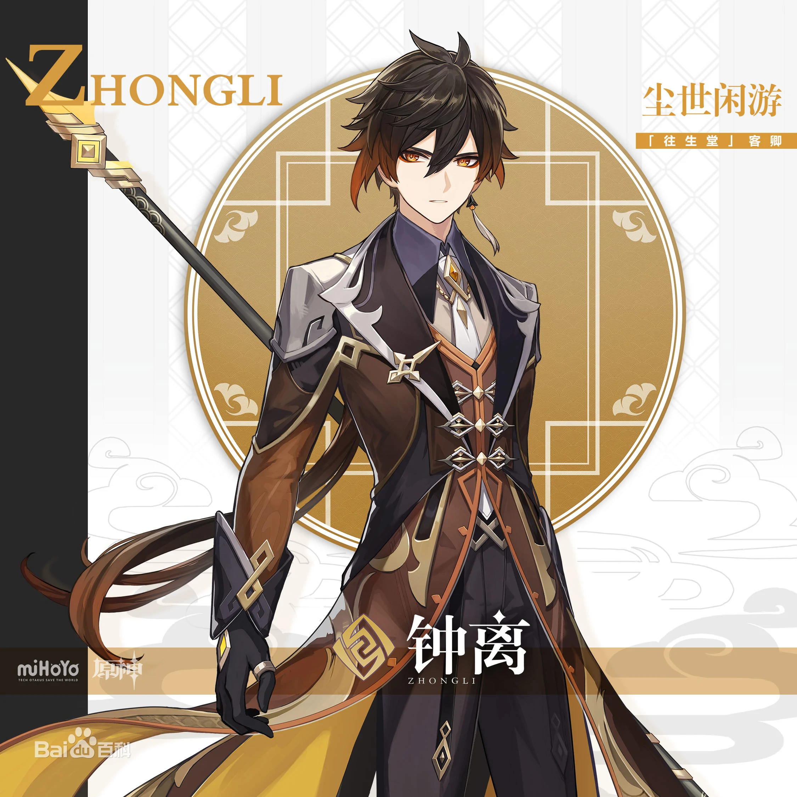
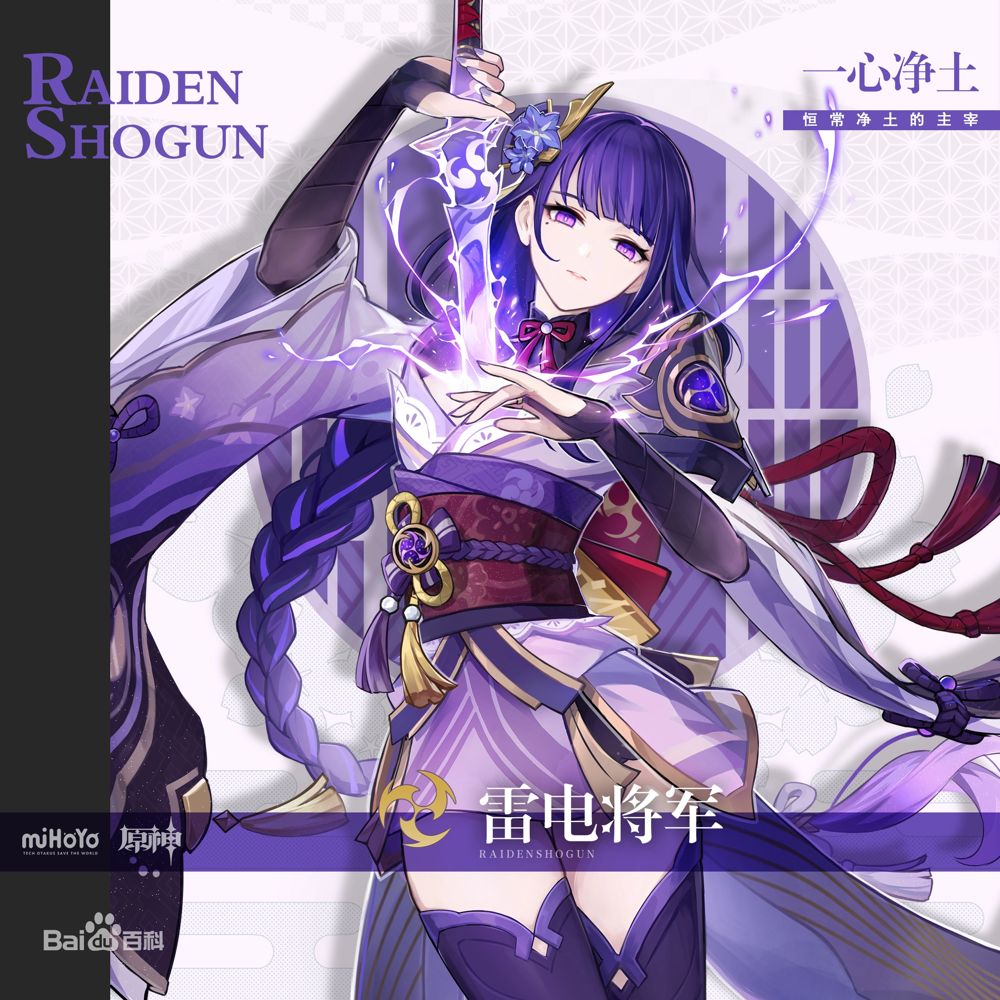

原神
游戏中拥有许多可操控角色，开局的默认角色可以选择男女，此外的角色性别固定。除旅行者外的角色，可以通过剧情、祈愿和活动获取。如安柏是游戏中除主角外，玩家可通过剧情激活的第一个角色。大部分角色都需要通过祈愿获取，祈愿分为常驻祈愿和活动祈愿，祈愿需要消耗相遇之缘或纠缠之缘。
“来得正好，旅行者。我想听听，你的愿望是什么？”
配音：喵☆酱（汉语），村濑步（日语）
简介：来路不明的吟游诗人，有时唱一些老掉牙的旧诗，有时又会唱出谁也没听过的新歌。
喜欢苹果和热闹的气氛，讨厌奶酪和一切黏糊糊的物质。
在引导“风”的元素力时，元素的塑形往往外显为羽毛，因为他很中意看上去轻飘飘的东西。

“哦，私房钱？真是个好建议，可惜忘了。”
配音：彭博（汉语），前野智昭（日语）
应“往生堂”邀请而来的神秘客卿。样貌俊美，举止高雅，拥有远超常人的学识。
虽说来历不明，却知礼数、晓规矩。坐镇“往生堂”，能行天地万物之典仪。

“我将永远护卫稻妻，践行鸣神的意志。若想与这些事物为敌，就要做好觉悟。”
配音：杨梦露（汉语），濑户麻沙美（日语）
天领奉行的将领。行如风，言如誓，是位魄力过人的女性。
她有着“神的笃信者”之名，将全部忠心都奉献给了雷电将军。
将军所追求的“永恒”，也是她愿意为之而战的信念。
